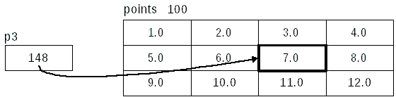

One Dimensional Arrays and Pointers
Let's start with something simple:Visually (with an arbitrary address):double d = 5.0; /* a double */ double *pd = &d; /* a pointer to a double */
This is the simplest use of a pointer. Here, d is a double and pd is a pointer to it. Nothing complicated at all.
When dealing with pointers and arrays, things can seem a little complicated. For example, there is a big difference between a pointer to a double and a pointer to an array of doubles. Below, da is an array of 4 doubles:
double da[4] = {1.0, 2.0, 3.0, 4.0}; /* array of 4 doubles */
How we declare the pointer is important. Creating a pointer to a double is trivial:
Visually:double *pd = da; /* a pointer to a double (in this case it's a pointer to the first element of the array) */
What confuses many new C programmers is that pd is not pointing at the array, but is pointing at the first element of the array. When an array name is used in an expression, the array is said to decay into a pointer to the first element. You can read about the history (and gory details) here: The Development of the C Language under the section: Embryonic C.
The exception to this rule is when the array name is used with the sizeof operator. (Actually, there are two more exceptions: When the array name is used with the & (address-of) operator and literal strings used to initialize an array. See this for more details.)
This is just how the language works and is something that C programmers have to get used to.
Also, remember that these are equivalent:
If we wanted to point at the second element, we would do this:double *pd = da; /* a pointer to a double (the first element of the array) */ double *pd = &da[0]; /* a pointer to a double (the first element of the array) */ double *pd = da + 0; /* same as the others, but kind of strange to do this */
Visually:double *pd = &da[1]; /* a pointer to a double (the second element of the array) */
These are equivalent:
double *pd = &da[1]; /* a pointer to a double (the second element of the array) */ double *pd = da + 1; /* a pointer to a double (the second element of the array) */
Creating a pointer to an array of doubles is a little more complicated:
Visually:double (*pda)[4] = &da; /* a pointer to an array of 4 doubles */
What is sizeof(pda)? What is sizeof(*pda)? What is sizeof(**pda)? To answer these questions you must first answer the question: "What are the types of each of those objects?"
The parentheses around *pda are important. Without them, you have this:
which is certainly not what you want. Also, the & in front of da is important. Without it, it's incorrect:double *pda[4] /* an array of 4 pointers to doubles */
and the gcc compiler calls us out on it:double (*pda)[4] = da; /* Incorrect */
The clang compiler is more verbose, even telling you how to fix it:warning: initialization from incompatible pointer type [-Wincompatible-pointer-types] double (*pda)[4] = da;
warning: incompatible pointer types initializing 'double (*)[4]' with an expression of type 'double [4]';
take the address with & [-Wincompatible-pointer-types]
double (*pda)[4] = da;
^ ~~
&
Two Dimensional Arrays and Pointers
Here's the reference array initialized with values:
double points[3][4] = {
{1.0, 2.0, 3.0, 4.0},
{5.0, 6.0, 7.0, 8.0},
{9.0, 10.0, 11.0, 12.0}
};
and with subscripts and arbitrary addresses:
The concept of creating pointers is similar with 2-dimensional arrays. If we want a pointer to the 2D array of doubles above, we could do this:
and it would look like this visually:double (*p1)[3][4] = &points; /* pointer to an array of 3 arrays of 4 doubles */
Again, the & in front of points is important. This is incorrect:
and the gcc compiler calls us out on it:double (*p1)[3][4] = points; /* Incorrect */
warning: assignment from incompatible pointer type [-Wincompatible-pointer-types]
p1 = points;
^
warning: incompatible pointer types assigning to 'double (*)[3][4]' from 'double [3][4]';
take the address with & [-Wincompatible-pointer-types]
p1 = points;
^ ~~~~~~
&
This may seem odd at first, especially if you are thinking that the value of points and &points are the same. This is true. They have the same value but they are of different types, and that's what the compiler is checking: types, not values. The compiler can't check values because that's done at runtime.
That is also why these are incorrect:And this is what the clang compiler says:double (*p1)[3][4] = &points[0]; /* Incorrect */ double (*p1)[3][4] = &points[0][0]; /* Incorrect */
warning: incompatible pointer types assigning to 'double (*)[3][4]' from 'double (*)[4]' [-Wincompatible-pointer-types]
p1 = &points[0]; /* Incorrect */
^ ~~~~~~~~~~
warning: incompatible pointer types assigning to 'double (*)[3][4]' from 'double *' [-Wincompatible-pointer-types]
p1 = &points[0][0]; /* Incorrect */
^ ~~~~~~~~~~~~~
Don't believe me? Here's a Mead Proof™:
Expression Type points an array of 3 arrays of 4 doubles. &points the address of (pointer to) an array of 3 arrays of 4 doubles. &points[0] the address of (pointer to) an array of 4 doubles (the first row). &points[0][0] the address of (pointer to) a double (the first double in the first row).
printf("Value of points is %p\n", (void *)points);
printf("Value of &points is %p\n", (void *)&points);
printf("Value of &points[0] is %p\n", (void *)&points[0]);
printf("Value of &points[0][0] is %p\n", (void *)&points[0][0]);
Those are stack-based addresses on a 64-bit Linux computer.Value of points is 0x7fffaa8fc240 Value of &points is 0x7fffaa8fc240 Value of &points[0] is 0x7fffaa8fc240 Value of &points[0][0] is 0x7fffaa8fc240
If we want to create a pointer to one element (row) of the 2D array, we could do this:
Visually:double (*p2)[4] = &points[1]; /* pointer to an array of 4 doubles (2nd element/row) */
These are equivalent:
If we want to create a pointer to the first element of that row, we could do this:double (*p2)[4] = &points[1]; /* pointer to an array of 4 doubles (2nd element) */ double (*p2)[4] = points + 1; /* pointer to an array of 4 doubles (2nd element) */
Visually:double *p3 = &points[1][0]; /* a pointer to a double (first element of 2nd row) */
Notice how the value (132) of p2 and p3 are the same. Their values are the same, but the types are different.
If we want to create a pointer to the third element of that row, we could do this:
Visually:double *p3 = &points[1][2]; /* a pointer to a double (3rd element of 2nd row) */
If we wanted to use the pointer p2 from above to initialize p3, it would look like this:
Breaking it down (as the compiler does):double *p3 = &(*p2)[2]; /* a pointer to a double (3rd element of 2nd row) */